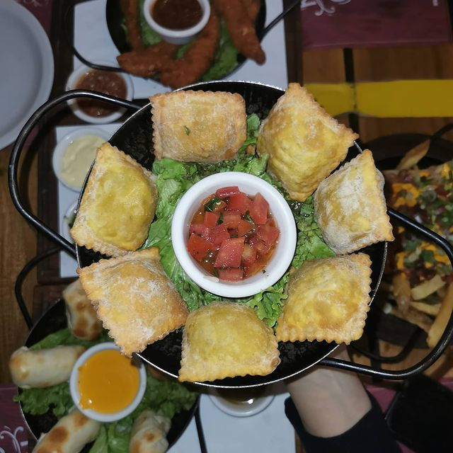
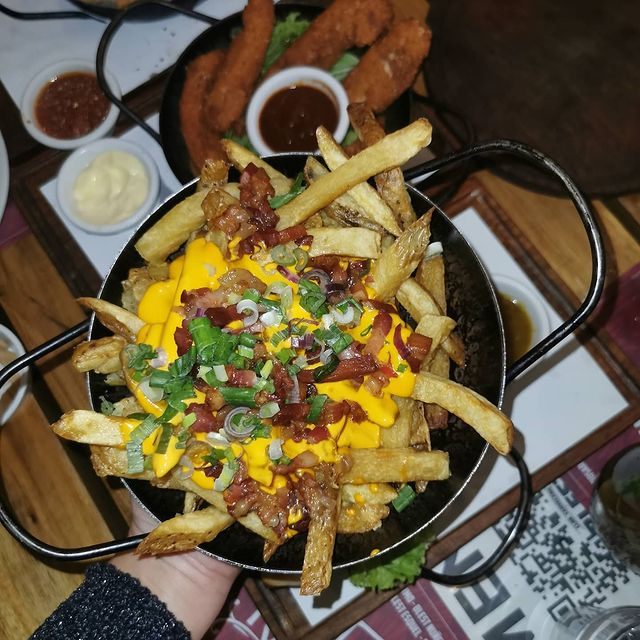

Reseña
Información
Somos de Núñez, y cada vez que estamos para ir a tomar algo rico, cerca, y a buen precio, elegimos Blest sin dudarlo. Terracita hermosa para ir de after, y mesas en la vereda: ideal para estar al aire libre y disfrutar la tarde.
 - Delivery: Rappi y Pedidos Ya.
- Horario y Take Away:
Lunes a Viernes de 15 a 23hs.
Sábados y Domingos de 12 a 23hs.
-Ubicación:

Tienen birra, tragos y tragos de autor que son una locura. Happy Hour desde las 16 hs hasta las 20hs. Si ya estás allá, te recomendamos picar algo. Sus ravioles fritos nos encantan y si estás para algo más, tienen un sandwich de mila que la rompe toda.